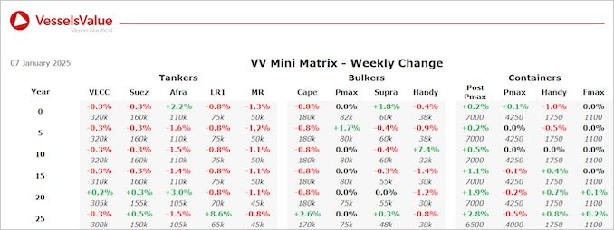

Bulkers:Bulker values remain stable this week
Panamax BC Ru Meng Ling (81,500 DWT, Apr 2010, Universal) sold SS/DD due to Silk Searoad Maritime for USD 15.40 mil, VV Value USD 16.55 mil
Supramax BC Qing Dao Gang Da Gang (56,400 DWT, Jun 2012, Qingshan Shipyard) sold at auction to undisclosed buyers for USD 12.9 mil, VV Value USD 13.5 mil
Supramax BC Zein (52,400 DWT, Jul 2001, Tsuneishi Zosen) sold to undisclosed buyers for 7 mil, VV Value USD 6.91 mil
Tankers:Tanker values remaining mainly stable across the board last week
MR2 (Chemical/Product) Kyra (47,900 DWT, Jan 2006, Iwagi Zosen) sold to undisclosed buyers for USD 17.1 mil, VV Value USD 16.59 mil
MR2 Chiba (46,000 DWT, Jan 2007, Shin Kurushima Onishi) sold DD Due to unknown Chinese buyers for USD 17 mil, VV Value USD 17.37 mil
Containers:Container values have seen some small increases due to recent sales of midage and older vessels
Handy Container Atout (1,700 TEU, Wadan Yards, 2010) sold to Swiss buyers for USD 18 mil, VV Value USD 17.5 mil
Panamax Sofia I (5,100 TEU, Jiangnan Shanghai Changxing, 2010) sold to Chinese buyers for USD 40 mil inc TC, VV Value USD 39.5 mi
